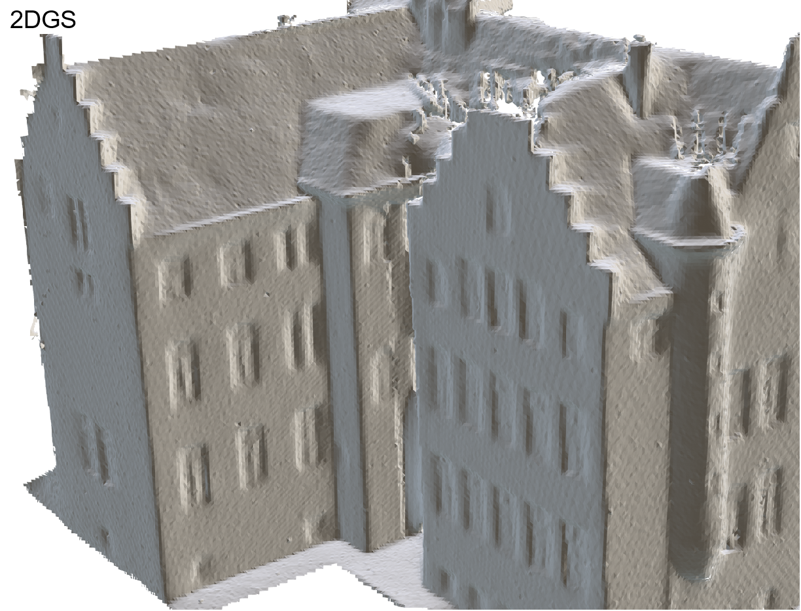

DTU meshes generated from 4 unposed images

Gaussian splatting has gained attention for its efficient representation and rendering of 3D scenes using continuous Gaussian primitives. However, it struggles with sparse-view inputs due to limited geometric and photometric information, causing ambiguities in depth, shape, and texture, as well as challenges in ensuring spatial consistency and geometry accuracy. To address these limitations, we propose GBR: Generative Bundle Refinement, a method for high-fidelity Gaussian splatting and meshing using only 4–6 input views. GBR integrates a neural bundle adjustment module for enhanced geometry accuracy and a generative depth refinement module to improve geometry fidelity. More specifically, the neural bundle adjustment module integrates a foundation network to produce initial 3D point maps and point matches from unposed images, followed by bundle optimization to improve cross-view consistency and accuracy. The generative depth refinement module employs a diffusion-based strategy to enhance geometric details and fidelity while preserving the depth scale. Finally, for Gaussian primitives learning, we propose a multimodal loss function incorporating depth and normal consistency, geometric regularization, and pseudo-view generation, providing robust guidance under sparse-view conditions. Experiments on widely-used datasets show that GBR significantly outperforms existing methods under sparse-view inputs. Additionally, GBR demonstrates the ability to reconstruct and render large-scale real scenes, such as the Great Wall, with remarkable detail using only 6 views.
Overview of our algorithm: Given sparse, pose-free camera inputs, we first employ neural Bundle Adjustment (neural-BA), combining neural-based MVS with traditional optimization techniques to obtain a dense, accurate point cloud along with precise intrinsic and extrinsic camera matrices, providing a robust initialization for 3DGS. Next, the dense point cloud is projected to obtain depth maps with accurate scale, and a diffusion process is applied to enhance the depth map resolution, resulting in scale-consistent, detail-rich depth and normal maps. These geometric constraints subsequently aid in the training of 3DGS, ultimately achieving a geometrically accurate 3DGS.

@article{chen2024pgsr,
title={PGSR: Planar-based Gaussian Splatting for Efficient and High-Fidelity Surface Reconstruction},
author={Danpeng Chen and Hai Li and Weicai Ye and Yifan Wang and Weijian Xie and Shangjin Zhai and Nan Wang and Haomin Liu and Hujun Bao and Guofeng Zhang},
booktitle={arxiv preprint arxiv:2406.06521},
year={2024}
}
```